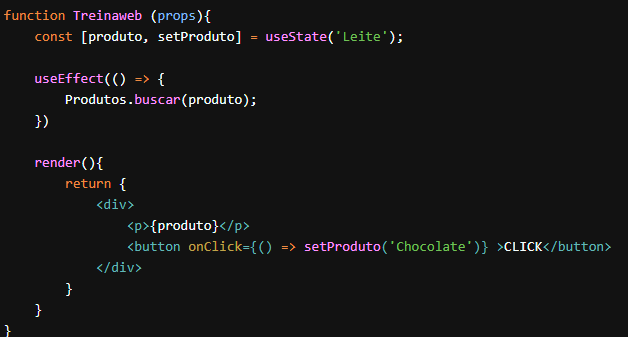

O useEffect é um Hook que serve para lidar com os efeitos. Podemos usá-los como os lifeCycles componentDidMount, componentDidUpdate e componentWillUnmount. Imagine que a gente tenha uma API que nos retorna uma lista de produtos baseado no nome que passarmos. 
O useEffect() recebe como primeiro parâmetro uma função que será executada assim que o componente renderizar. Então é um ótimo lugar para fazer requisições. Dessa maneira como escrevemos, a função passada ao useEffect() será executada sempre que o componente for atualizado.